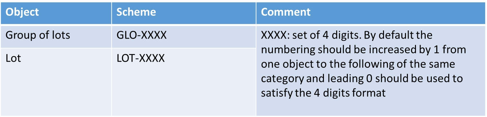

Lot Management
The ESPD includes a change regarding how lots are managed. This is the outcome of the alignment with eForms.
In this new version the ESPD will have the following logic:
There will be 1 ESPD request stating the Exclusion Criteria and the Selection Criteria, but with differences respect version 2.1.1. The figure below shows the logic:

Figure 13. Overview of new lot management approach.
The ESPD request include exclusion grounds that are general for all the Lots in which the procedure is divided in. However, for Selection Criteria is different since in the procedure is possible to have Lots with different selection criteria. Therefore, in the ESPD request the different Selection Criteria will have to include the reference to the lots which applies. It will be done using the UBL 2.3 cac:ProcurementProjectLotReference that includes cbc:TenderingCriterion.
The following XML example shows how it is done:
<!--- Root elements eliminated for the sake of brevity -->
<cac:TenderingCriterion>
<cbc:ID schemeID="criterion" schemeAgencyID="OP" schemeVersionID="3.1.0">499efc97-2ac1-4af2-9e84-323c2ca67747</cbc:ID>
<cbc:CriterionTypeCode listID="http://publications.europa.eu/resource/authority/criterion" listAgencyID="OP" listVersionID="20210616-0">gen-year-to</cbc:CriterionTypeCode>
<cbc:Name>General yearly turnover</cbc:Name>
<cbc:Description>Its general yearly turnover for the number of financial years required in the relevant notice, the in the ESPD, the relevant notice or the ESPD is as follows:</cbc:Description>
<cac:ProcurementProjectLotReference>
<cbc:ID schemeID="Criterion" schemeAgencyID="OP" schemeVersionID="3.1.0">LOT-00000</cbc:ID>
</cac:ProcurementProjectLotReference>
<cac:ProcurementProjectLotReference>
<cbc:ID schemeID="Criterion" schemeAgencyID="OP" schemeVersionID="3.1.0">LOT-00001</cbc:ID>
</cac:ProcurementProjectLotReference>
<cac:SubTenderingCriterion>
<cbc:ID schemeID="criterion" schemeAgencyID="OP" schemeVersionID="3.1.0">e6b21867-95b5-4549-8180-f4673219b179</cbc:ID>
<cbc:Name>[Name of the National Criterion]</cbc:Name>
<cbc:Description>[Description of the National Criterion ]</cbc:Description>
<cac:TenderingCriterionPropertyGroup>
<cbc:ID schemeID="criterion" schemeAgencyID="OP" schemeVersionID="3.1.0">8c39b505-8abe-44fa-a3e0-f2d78b9d8224</cbc:ID>
<cbc:PropertyGroupTypeCode listID="property-group-type" listAgencyID="OP" listVersionID="3.1.0">ON*</cbc:PropertyGroupTypeCode>
<cac:TenderingCriterionProperty>
<cbc:ID schemeID="criterion" schemeAgencyID="OP" schemeVersionID="3.1.0">ed2a13ed-cf3d-478e-888d-cb9b89f55020</cbc:ID>
<cbc:Description>[Additional information; e.g. no evidences online]</cbc:Description>
<cbc:TypeCode listID="criterion-element-type" listAgencyID="OP" listVersionID="3.1.0">CAPTION</cbc:TypeCode>
<cbc:ValueDataTypeCode listID="response-data-type" listAgencyID="OP" listVersionID="3.1.0">NONE</cbc:ValueDataTypeCode>
</cac:TenderingCriterionProperty>
<cac:TenderingCriterionProperty>
<cbc:ID schemeID="criterion" schemeAgencyID="OP" schemeVersionID="3.1.0">b21ab072-e5b6-495c-ad6e-4ead6993ede5</cbc:ID>
<cbc:Description>Your Answer</cbc:Description>
<cbc:TypeCode listID="criterion-element-type" listAgencyID="OP" listVersionID="3.1.0">QUESTION</cbc:TypeCode>
<cbc:ValueDataTypeCode listID="response-data-type" listAgencyID="OP" listVersionID="3.1.0">INDICATOR</cbc:ValueDataTypeCode>
</cac:TenderingCriterionProperty>
</cac:TenderingCriterionPropertyGroup>
</cac:SubTenderingCriterion>
<cac:Legislation>
<cbc:ID schemeID="criterion" schemeAgencyID="OP" schemeVersionID="3.1.0">635a537c-57bf-4beb-8b69-d97d49382e1f</cbc:ID>
<cbc:Title>[Legislation title]</cbc:Title>
<cbc:Description>[Legislation description]</cbc:Description>
<cbc:JurisdictionLevel>EU</cbc:JurisdictionLevel>
<cbc:Article>[Article, e.g. Article 2.I.a]</cbc:Article>
<cbc:URI>http://eur-lex.europa.eu/</cbc:URI>
<cac:Language>
<cbc:LocaleCode listID="language" listAgencyName="OP" listVersionID="20211208-0">ENG</cbc:LocaleCode>
</cac:Language>
</cac:Legislation>
<cac:TenderingCriterionPropertyGroup>
<cbc:ID schemeID="criterion" schemeAgencyID="OP" schemeVersionID="3.1.0">5ca58d66-3ef1-4145-957c-45d5b18a837f</cbc:ID>
<cbc:PropertyGroupTypeCode listID="property-group-type" listAgencyID="OP" listVersionID="3.1.0">ON*</cbc:PropertyGroupTypeCode>
<cac:TenderingCriterionProperty>
<cbc:ID schemeID="criterion" schemeAgencyID="OP" schemeVersionID="3.1.0">42824f1f-3574-4e53-80ca-501d22e85ef8</cbc:ID>
<cbc:Description>Minimum requirement</cbc:Description>
<cbc:TypeCode listID="criterion-element-type" listAgencyID="OP" listVersionID="3.1.0">REQUIREMENT</cbc:TypeCode>
<cbc:ValueDataTypeCode listID="response-data-type" listAgencyID="OP" listVersionID="3.1.0">AMOUNT</cbc:ValueDataTypeCode>
<!-- No answer is expected here from the economic operator, as this is a REQUIREMENT issued by the buyer. Hence the element 'cbc:ValueDataTypeCode' contains the type of value of the requirement issued by the buyer -->
<cbc:ExpectedAmount currencyID="EUR">100000</cbc:ExpectedAmount>
</cac:TenderingCriterionProperty>
<!--- Rest of the elements of the criterion have been eliminated for the sake of brevity -->In Economic Operator’s side it is different, as can be read in the image above there will be as many ESPD Response as Lots or Group of Lots the EO wishes to tender for. If the EO wants to participate in three Lots, the EO will need to fill in 3 ESPD Response. For more details on this, please see section ESPD Response.
Lots identifiers:
This version of the ESPD changes the form to identify the Lots and Group of Lots taking the eForms format. This changes is done towards the interoperability of both models.
Until version 2.1.1, the lots have been identified with the following structure "Lot1, Lot2, Lot3". With the new approach (eForms) the Lots identifiers will be as follows: (eForms) the Lots identifiers will be as follows:

Figure 14: Lot Identifiers according to eForms schema